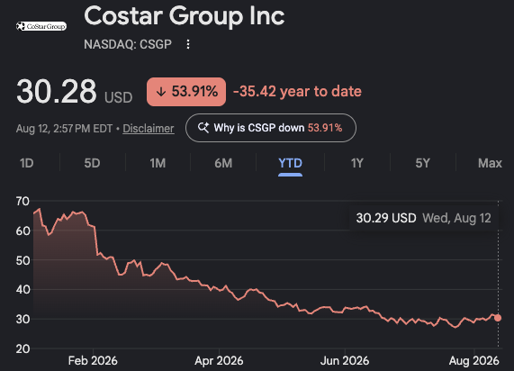
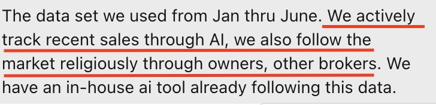
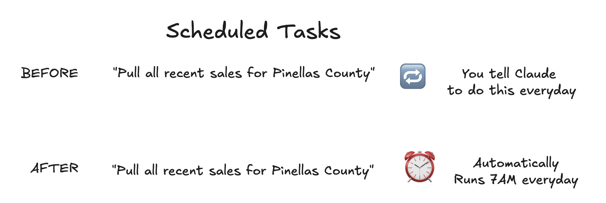
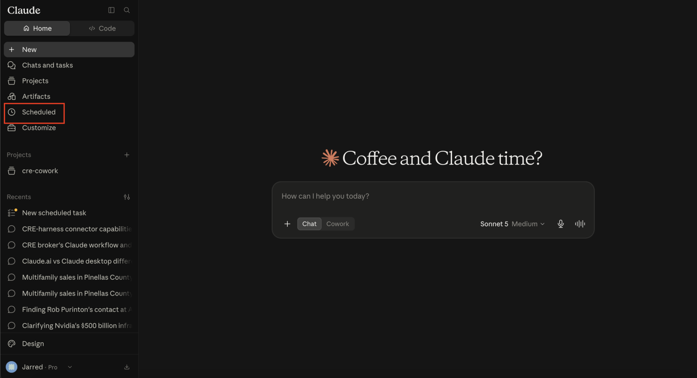
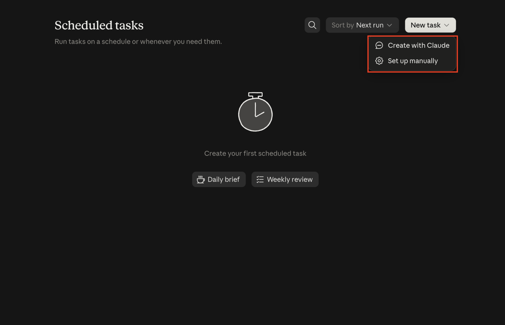
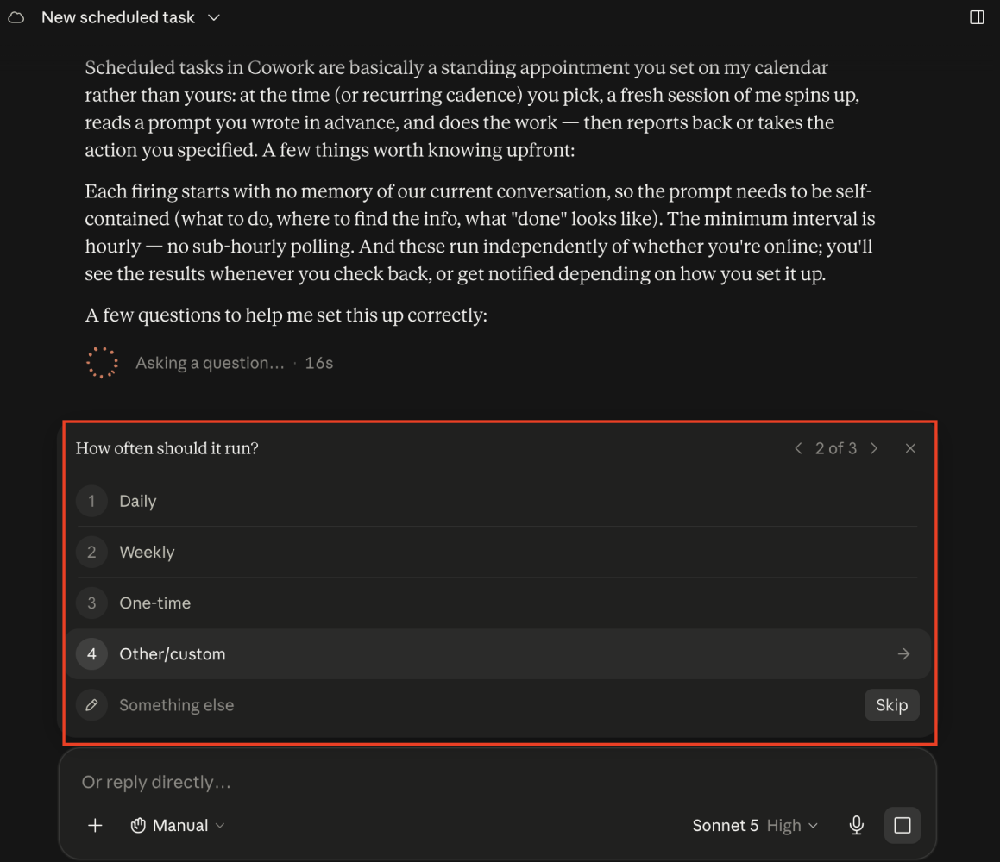

A Claude scheduled task runs a job you describe once on a cadence: hourly, daily, weekdays, weekly or on demand. Open Scheduled in the Claude sidebar, choose Create with Claude, and name the source, filters and output. Tasks run in Anthropic's cloud, so they use connectors and cloud files, not local folders. Available on Pro, Max, Team and Enterprise.
The AI in Real Estate Field Guide puts four applied CRE workflows, an eight-question readiness scorecard and a 30-day pilot plan in one 18-page PDF.
Why put market research on a schedule?
Because the same questions come back every week: what sold, who bought it, which loans are coming due. CoStar built one of the largest businesses in the industry on exactly that demand.

That does not mean Claude can log into CoStar. It cannot (here is why), so recurring research has to run on sources you are allowed to automate.
A CEO running a multifamily firm in Florida told me:

In practice that usually means someone typing "pull recent sales from the county site" into a chat window every week. A scheduled task writes that request down once and runs it.

How do you create a scheduled task in Claude?
- Open Scheduled in the left sidebar. It is fully available in Claude Desktop, and in beta on the web and mobile apps.
- Choose Create with Claude, or Set up manually if you already know exactly what you want. In the merged Claude rolling out since September 16, 2026, you can also describe the job in any conversation and Claude will offer to schedule it.
- Answer Claude's questions about cadence, source, output and limits.
- Name the connector and the tool the task should use.
- Run it once on demand and read the output before letting it run on its own.


Tasks can use the same connected tools, Skills and plugins as any other Cowork task. What they cannot do is read a folder on your computer, because they run in the cloud. Put the inputs behind a connector or in cloud-saved files. Source: Anthropic help, September 2026.
Example: a weekly recent-sales digest
For this example I used the county records connector we built for commercial real estate teams, which reads county property appraiser and deed records in four counties around Tampa. When Claude asked for a source I named the cre-harness connector, and when it asked which tool, the recent sales tool.

In the original run, the digest found 18 properties recorded as sold between August 6 and August 13, 2026. A prompt that holds up better week to week:
Every Monday at 7am, use the county records connector's
recent sales tool to list commercial sales recorded in the last
7 days in [county], for [property types], above $[minimum].
For each sale: address, price, buyer, seller, recording date,
and price per square foot only where one deed conveyed one parcel.
List $100 deeds and multi-parcel deals separately. Do not treat
them as prices.
End with the date of the source file.The $100 line is specific to Florida, where a nominal $100 deed usually marks a transfer that is not a sale. The multi-parcel line matters everywhere: one price can cover several parcels, and dividing it by one building's square footage gives a number that means nothing. More on both in what Florida property appraiser data tells you.
Why does last week always look slow?
Recording lag. A deed is recorded after the closing, and a county's bulk file is only as fresh as the day it was published. In the Florida county files we load, the most recent 30 to 45 days always read low. That is not the market slowing down.
Two rules follow. Put the source file date on every digest. And judge trends on periods at least 45 days old, using the latest week only to spot new names.
What else is worth scheduling?
- A capital-markets summary each Monday from sources you license for AI use.
- A pipeline digest from your CRM: deals with no activity in 14 days and the follow-ups due this week.
- A loan-maturity watchlist for owners you track, from sources that carry maturity dates.
Give each task one named reader. A digest nobody owns is a digest nobody reads.
Common questions
Do Claude scheduled tasks run when my computer is off?
Yes, as of September 2026. Scheduled tasks run in Anthropic's cloud, so they keep their cadence when your computer is asleep or the Claude app is closed. The trade-off is that a cloud task cannot read a local folder. It works through connectors and cloud-saved files.
Which Claude plans include scheduled tasks?
Pro, Max, Team and Enterprise. Scheduled tasks are fully available in the desktop app and in beta on the web and mobile apps for Pro, Max and Team. Enterprise workspaces get the web and mobile versions when an admin turns them on.
How often can a Claude scheduled task run?
Hourly, daily, on weekdays, weekly, or only when you start it. You can also run any task on demand from the Scheduled page, which is the best way to test the prompt before it starts running on its own.
Can a scheduled task pull from CoStar?
No. CoStar has no Claude connector, and its public Terms of Use bar sharing logins with AI agents and using its data with generative AI. Schedule tasks against sources you are allowed to automate, such as county records, your CRM and your own files.
Why does my weekly sales digest undercount?
Deeds reach the county record some time after a sale closes, so the newest weeks always look thin. In the Florida county files we work with, the latest 30 to 45 days read low. Print the source file date on every digest and judge trends on older periods.
If your team checks the same source on the same cadence, it is a candidate for a scheduled task.
Continue with the commercial real estate AI workflow hub, or read the original version in the altr'd newsletter on LinkedIn.